Sequences of eigenvalue problems consistently appear in a large class of applications based on the iterative solution of a non-linear eigenvalue problem. A typical example is given by the chemistry and materials science ab initio simulations relying on computational methods developed within the framework of Density Functional Theory (DFT). DFT provides the means to solve a high-dimensional quantum mechanical problem by representing it as a non-linear generalized eigenvalue problem which is solved self-consistently through a series of successive outer-iteration cycles. As a consequence each self-consistent simulation is made of several sequences of generalized eigenproblems
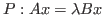
. Each sequence,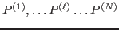
, groups together eigenproblems with increasing outer-iteration index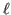
.In more general terms a set of eigenvalue problems
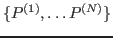
is said to be a ``sequence'' if the solution of the -th eigenproblem determines, in an application-specific manner, the initialization of the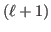
-th eigenproblem. In turns this definition implies that successive eigenproblems in a sequence possess a certain degree of correlation. For instance at the beginning of each DFT cycle an initial function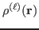
determines the initialization of the -th eigenproblem. A large fraction of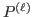
eigenpairs are then use to compute a new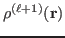
which, in turn, leads to the initialization of a new eigenvalue problem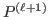
. In DFT sequences, correlation becomes manifest in the way eigenvectors of successive eigenproblems become progressively more collinear to each other as the -index increases.The growing collinearity between eigenvectors of increasing -index is a phenomenon which suggests a possible method to measure and exploit the correlation of a sequence. Recording the variation of eigenvectors angles as a function of provides a way to assess the degree of the correlation. In addition small angles which decrease with increasing suggest the possible use of the eigenvectors of as an educated guess for the eigenvectors of the successive problem . The key element is to take advantage of this growing eigenvector collinearity in order to improve the performance of the eigensolver. While implementing this strategy naturally leads to the use of iterative eigensolvers, very few methods possess the characteristics which make them well suited to the task at hand.
An iterative method capable of exploiting the eigenvector angles decline should satisfiy two distinct key properties: 1) the ability to receive as input a sizable set of approximate eigenvectors, and 2) the potential to make an efficient use of them by solving simultaneously for a substantial portion of the eigenpairs. In theory such a solver, when used on a sequence of correlated problems, should achieve a moderate-to-substantial reduction in the number of matrix-vector operations as well as an improved convergence. In practice the effectiveness of the eigensolver depends on its ability to filter away as efficiently as possible the unwanted components of the inputed approximate eigenvectors.
We developed a subspace iteration method (ChFSI) specifically tailored for sequences of eigenproblems whose correlation appears in the form of increasingly collinear eigenvectors. Our strategy is to take the maximal advantage possible from the information that the solution of the eigenproblem is providing when solving for the successive problem. As a consequence the subspace iteration was augmented with a Chebyshev polynomial filter whose degree gets dynamically optimized so as to minimize the number of matrix-vector multiplications. The effectiveness of the Chebyshev filter is substantially increased when inputed the approximate eigenvectors
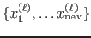
, as well as very reliable estimates, namely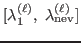
, for the limits of the eigenspectrum interval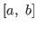
to be filtered out. In addition the degree of the polynomial filter is adjusted so as to be minimal with respect to the required tolerance for the eigenpairs residual. This result is achieved by exploiting the dependence each eigenpair residual have with respect to its convergence ratio as determined by the rescaled Chebyshev polynomial and its degree. The solver is complemented with an efficient mechanism which locks and deflates the converged eigenpairs.The resulting eigensolver was implemented in C language and parallelized for both shared and distributed architectures. Numerical tests show that, when the eigensolver is inputed approximate solutions instead of random vectors, it achieves up to a 5X speedup. Moreover ChFSI takes great advantage of computational resources by scaling over a large range of cores commensurate with the size of the eigenproblems. Specifically, by making better use of massively parallel architectures, the distributed memory version will allow DFT users to simulate physical systems quite larger than are currently accessible.
In the context of DFT applications, we tested ChFSI on sequences of dense eigenvalue problems, where the size of each problem ranges from 5 to 30 thousand and the interest lays in the eigenpairs corresponding to the lower 5-20% part of the spectrum. Due to the dense nature of the eigenproblems and the large portion of the spectrum requested, iterative solvers are generally not competitive so that current simulation codes uniquely use direct methods. Despite being in principle disadvantaged, the parallel ChFSI inputed with approximate solutions performs substantially better than the corresponding direct eigensolvers, even for a significant portion of the sought-after spectrum.
The pivotal element allowing the achievement of such a result resides in the change of paradigm when looking at sequences of eigenproblems. While the computational scientist solves many isolate eigenproblems one after the other, we look at the entire computation as made of one sequence of correlated problems. This shift in focus enables one to harness the inherent essence of the correlation between successive problems and translate it to an efficient use of opportunely tailored iterative solvers. In the long term such a result will positively impact a large community of computational scientists working on DFT-based methods.